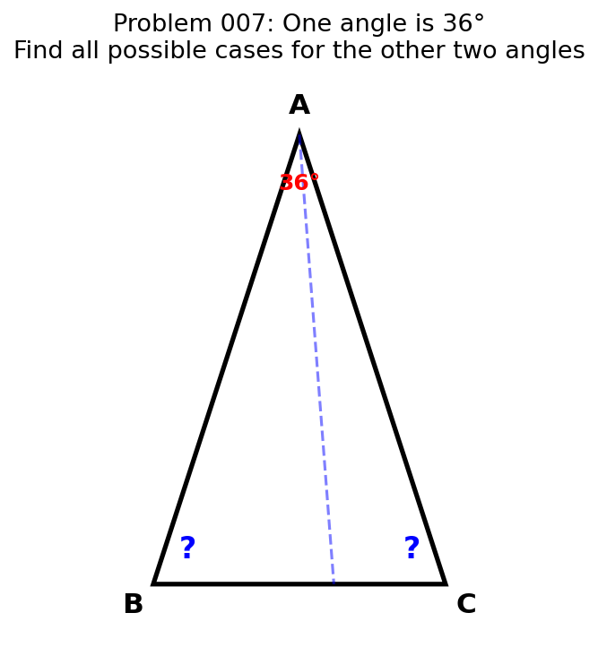
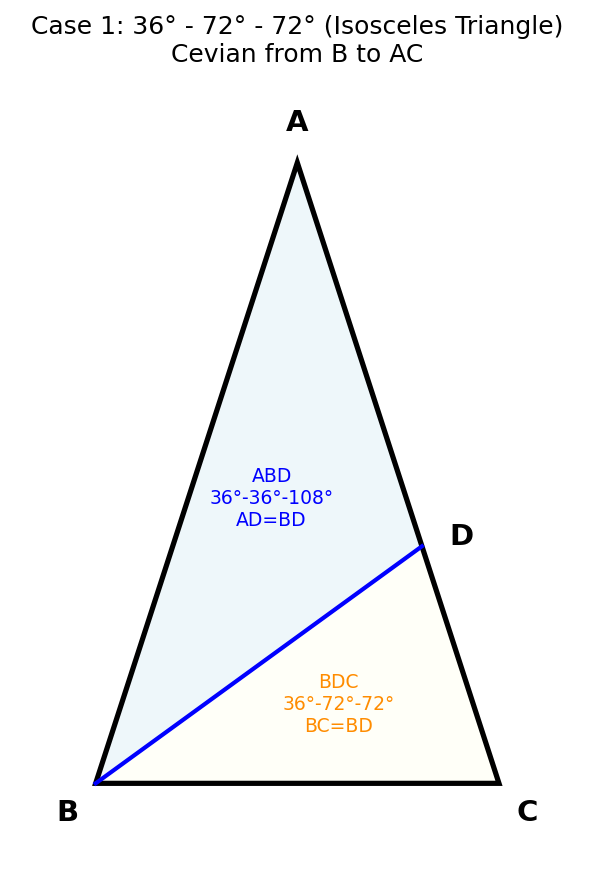
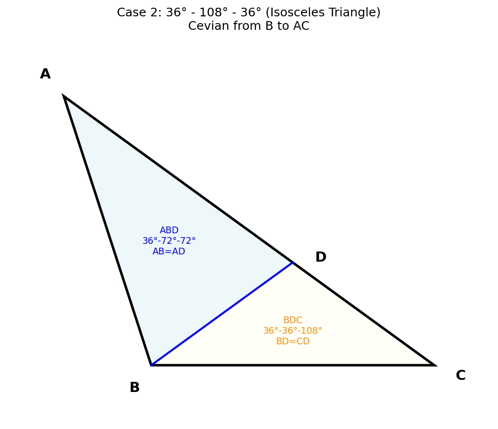
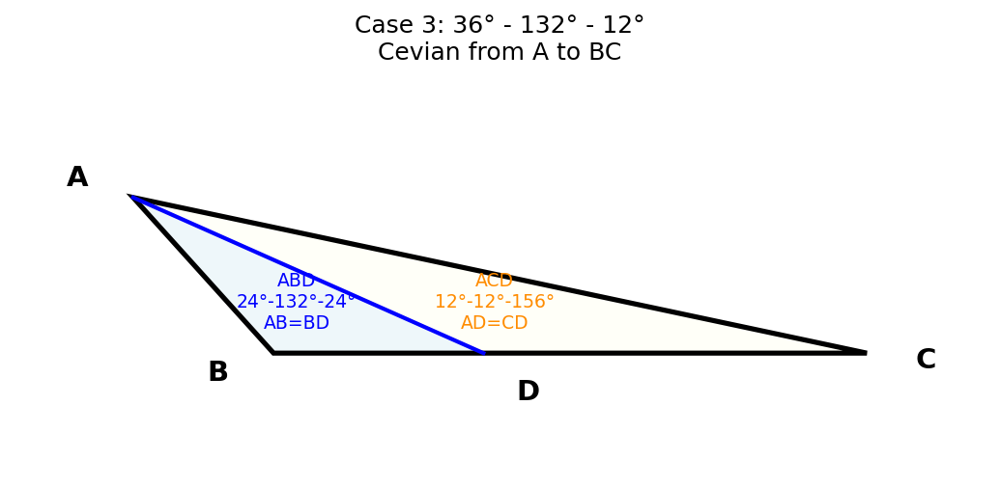
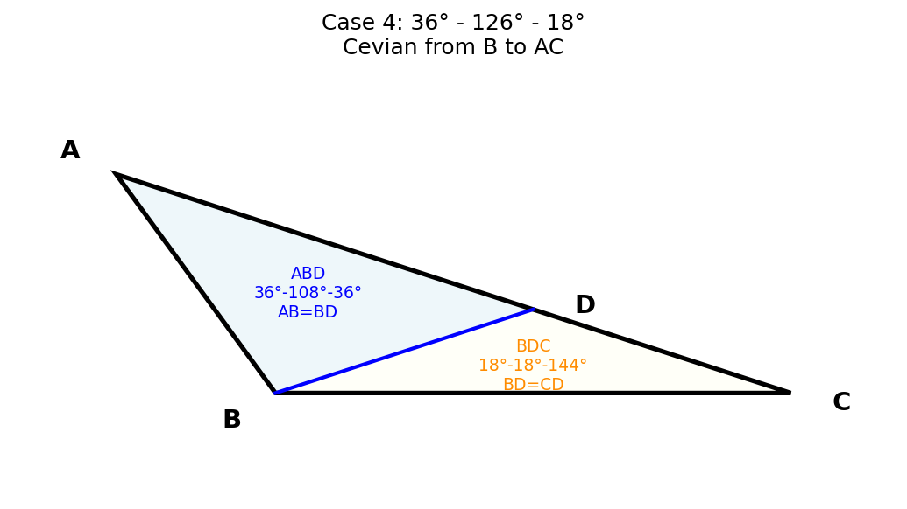
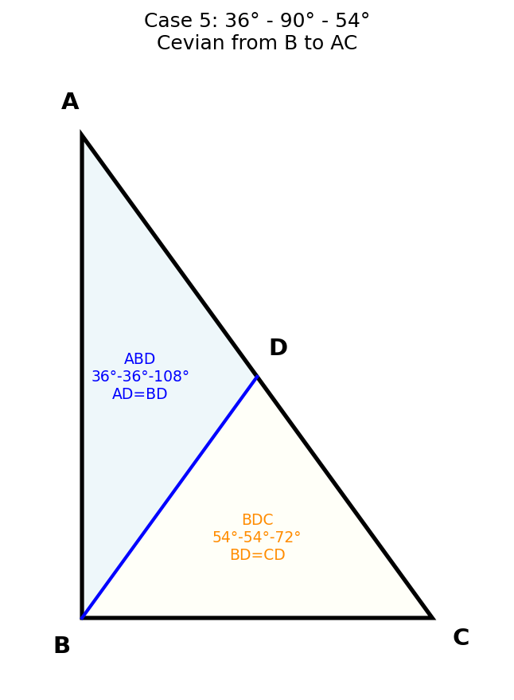
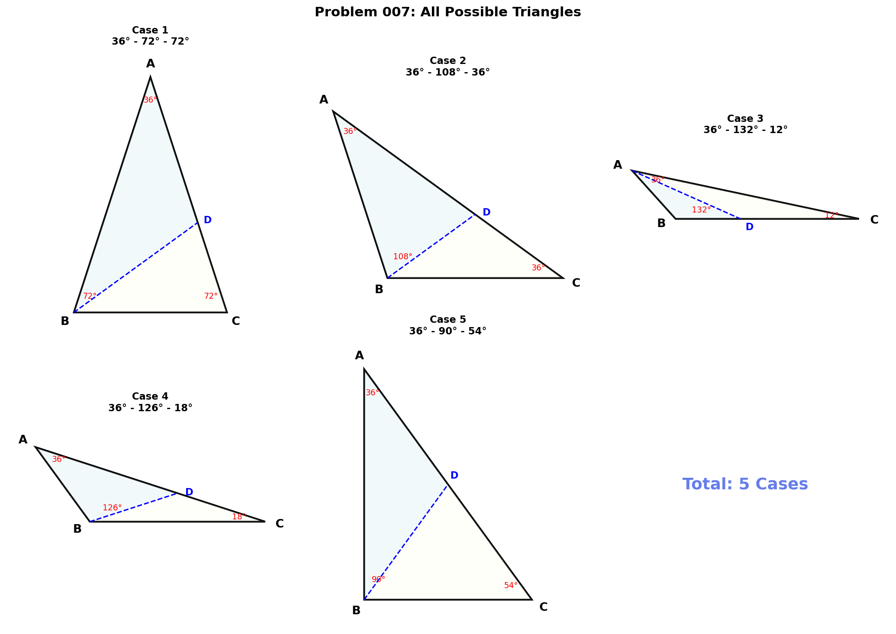

📋 第一步：理解题目
题目：将一个三角形分成两个等腰三角形，若原三角形的一个内角是36°，则原三角形的另两个内角有多少种可能的情况？写出各种可能的情况。
题目分析：
- 三角形有一个角为 36°，另两个角之和为 144°
- 通过一条线段将三角形分为两个等腰三角形
- 这条线段必须是从某个顶点到对边的线段（cevian）
- 需要找出所有可能的情况

✓ 与参考例题类似，但这道题更加开放——原三角形不一定是等腰三角形，而且36°角可以在任意位置。
? 分割线从哪个顶点出发会影响结果。需要分别讨论：从36°角顶点出发、从其他顶点出发。
✗ 不要认为只有一两个答案！这道题需要穷举所有可能，答案可能有很多种。
📐 第二步：建立分析框架
设△ABC中，一个角为36°。分割线从某顶点到对边上的点D。
分类讨论策略：
按分割线的起点分为两大类：
- 从36°角的顶点出发：分割线将36°角分为两部分
- 从其他顶点出发：36°角在某个小三角形中保持完整
通用方法：
对每种情况，设未知角度，利用：
- 三角形内角和 = 180°
- 等腰三角形的两底角相等
- 邻补角之和 = 180°（D点两侧的角）
每个小三角形有3种等腰可能（3对可能相等的边），但部分会因为角度范围无效而被排除。最后将有效情况两两组合。
✓ 系统化分类是关键！虽然看起来情况很多，但通过角度范围（>0° 且 <180°）可以快速排除无效组合。
? 提示：从"非36°角的顶点"出发时，如果∠ABD = 36°（即分割线平分了某个角），往往能得到有效解。
✗ 不要遗漏对称情况！比如"从B出发"和"从C出发"可能给出不同结果（当三角形不对称时）。
🔍 第三步：情况1 — 36°、72°、72°
等腰三角形（顶角36°）
这就是参考例题中的"黄金三角形"！
分割方式：从∠B出发，到AC上的点D。
- 设 ∠ABD = 36°，∠DBC = 36°
- △ABD：∠A=36°, ∠ABD=36°, ∠ADB=108° → AD = BD（底角相等）✓
- △BDC：∠DBC=36°, ∠C=72°, ∠BDC=72° → BC = BD（底角相等）✓

验证：36° + 36° + 108° = 180° ✓；36° + 72° + 72° = 180° ✓
✓ 36°-72°-72°是最经典的可分割等腰三角形。分割后的小三角形△BDC也是36°-72°-72°！可以无限分割下去。
? 这个三角形与正五边形紧密相关——正五边形对角线构成的三角形恰好是36°-72°-72°。
✗ 注意分割线∠ABD=36°不是角平分线（因为∠B=72°，角平分线应是36°）。这里恰好∠ABD等于∠A。
🔍 第四步：情况2 — 36°、108°、36°
等腰三角形（顶角108°）
也叫"钝角黄金三角形"——正五边形的一个三角形部分。
分割方式：从∠B出发，到AC上的点D。
- 设 ∠ABD = 72°，∠DBC = 36°
- △ABD：∠A=36°, ∠ABD=72°, ∠ADB=72° → AB = AD（底角相等）✓
- △BDC：∠DBC=36°, ∠C=36°, ∠BDC=108° → BD = CD（底角相等）✓

验证：36° + 72° + 72° = 180° ✓；36° + 36° + 108° = 180° ✓
✓ 有趣的是：分割后得到的两个小三角形恰好是36°-72°-72°和36°-36°-108°——即情况1和情况2本身！
? 36°-108°-36°也是等腰三角形（AB=BC）。两个底角都是36°。
✗ 有人可能误认为这和情况1是同一种三角形——但它们不同！情况1是锐角等腰三角形，情况2是钝角等腰三角形。
🔍 第五步：情况3 — 36°、132°、12°
一般钝角三角形
分割线从36°角的顶点A出发到对边BC。
分割方式：从∠A出发，设∠BAD = 24°，∠CAD = 12°。
- △ABD：∠BAD=24°, ∠B=132°, ∠ADB=24° → AB = BD（底角相等）✓
- △ACD：∠CAD=12°, ∠C=12°, ∠ADC=156° → AD = CD（底角相等）✓

验证：24° + 132° + 24° = 180° ✓；12° + 12° + 156° = 180° ✓
检查D点：∠ADB + ∠ADC = 24° + 156° = 180° ✓（D在BC上）
✓ 这是从36°角顶点出发的情况。注意分割将36°分为24°+12°。
? 关键观察：132° = 180° - 48° = 180° - 2×24°，而12° = 36° - 24°。所有角度都与24°和12°有关。
✗ 这个三角形很"扁"（132°角接近平角），容易在画图时遗漏。但它完全合法！
🔍 第六步：情况4 — 36°、126°、18°
分割方式：从∠B=126°出发，设∠ABD = 108°，∠DBC = 18°。
- △ABD：∠A=36°, ∠ABD=108°, ∠ADB=36° → AB = BD（∠A=∠ADB=36°）✓
- △BDC：∠DBC=18°, ∠C=18°, ∠BDC=144° → BD = CD（底角相等）✓

验证：36° + 108° + 36° = 180° ✓；18° + 18° + 144° = 180° ✓
检查D点：∠ADB + ∠BDC = 36° + 144° = 180° ✓
✓ 分割后的△ABD恰好是36°-108°-36°（即情况2的三角形），说明这些情况之间有内在联系！
? 注意：126° = 108° + 18°，而108° = 3×36°，18° = 36°/2。所有角度都是36°的倍数或半数。
✗ 容易遗漏这种情况——因为126°和18°看起来"不常见"。分类讨论时必须穷举所有可能！
🔍 第七步：情况5 — 36°、90°、54°
直角三角形
这是一个直角三角形！分割线从90°角的顶点出发。
分割方式：从∠B=90°出发，设∠ABD = 36°，∠DBC = 54°。
- △ABD：∠A=36°, ∠ABD=36°, ∠ADB=108° → AD = BD（底角相等）✓
- △BDC：∠DBC=54°, ∠C=54°, ∠BDC=72° → BD = CD（底角相等）✓

验证：36° + 36° + 108° = 180° ✓；54° + 54° + 72° = 180° ✓
检查D点：∠ADB + ∠BDC = 108° + 72° = 180° ✓
✓ 这是唯一的直角三角形情况！36° + 54° = 90°，恰好互余。
? 分割后AD = BD = CD，这意味着D是某个圆的圆心（到A、B、C距离之间有特殊关系）。
✗ 有些同学会忽略直角三角形这种情况。记住：题目没有限制三角形类型，所以直角三角形也要考虑！
🎯 总结
| 序号 |
三个内角 |
三角形类型 |
验证 |
| 1 |
36°、72°、72° |
锐角等腰三角形 |
✓ |
| 2 |
36°、108°、36° |
钝角等腰三角形 |
✓ |
| 3 |
36°、132°、12° |
钝角三角形 |
✓ |
| 4 |
36°、126°、18° |
钝角三角形 |
✓ |
| 5 |
36°、90°、54° |
直角三角形 |
✓ |

解题思路总结：
- 确定分割线是从顶点到对边的线段
- 分别讨论从36°角顶点和从其他顶点出发
- 对每个小三角形列出所有等腰可能
- 两两组合、联立方程求解
- 验证每个解的合法性（角度>0°）
涉及知识点：
等腰三角形性质
三角形内角和
分类讨论
方程思想
穷举验证
邻补角
解题技巧：
- 不遗漏：系统化讨论所有可能的cevian起点和等腰组合
- 善用对称性：交换B和C的角色可以减少重复计算
- 验证完备：每个答案都要验证两个小三角形确实是等腰的
- 特殊值敏感：36°与72°、108°等角度关系密切（五边形角度）